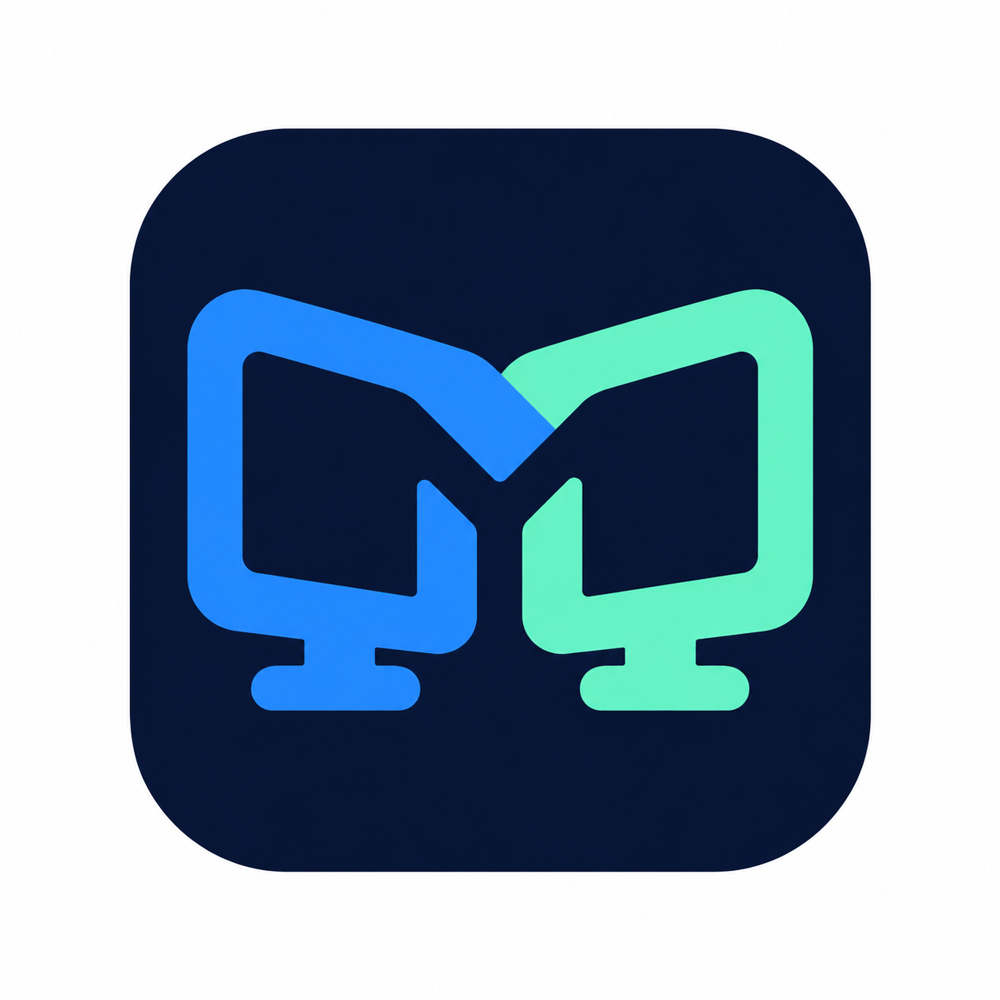

Mirror a screenA familiar screen.
A familiar screen.
Anywhere on your desk.
Bring your phone into a window on your computer, or view your computer from another device.
Linux prototype · other platforms planned
MightyMonitor.Your laptop. Your phone. Your other laptop. We’re building a way for them to work together—on your local network.
Linux prototype. Installers are not published yet.
See a screen on another device. Linux implementation exists; real-device validation is pending.
The goal is simple: use the screen you have, from the device you’re on. These are the experiences we’re working toward.
Bring your phone into a window on your computer, or view your computer from another device.
Linux prototype · other platforms plannedUse your computer’s keyboard and mouse on your phone. Or use your phone to control your PC.
Planned · not available yetTurn a second computer or phone into an extra display. Eventually, share in both directions at once.
Planned · not available yetDevelopment status
This is a prototype, not a finished cross-platform app. Here’s what exists—and what still stands between us and the full experience.
Screen data transport, reconnect logic, video codecs and bitrate adaptation.
Host, viewer and desktop controls exist. Real desktop and Wi-Fi testing remain.
Windows and Android, secure pairing, remote input, extended displays and concurrent sessions.
Installers, release builds and hands-on checks across supported devices.
Status reviewed 18 October 2026. Building successfully does not mean a feature has been tested on physical devices. Read the acceptance plan ↗
Installer links come straight from the project’s latest published release. No source archives disguised as downloads.
Checking for published installers…
Desktop installer
MSI or setup installerDesktop package
DEB or RPM installerPhone & tablet app
APK installation packageNot yet. The Linux prototype is for development and testing. Windows video support, Android, remote control, extended displays, and installers are still pending. The current connection is not encrypted or password protected; use only a trusted local network.
Wi-Fi and local-network operation are the primary goal. The current TCP transport is designed for local networks, but real Wi-Fi playback, recovery, and end-to-end latency still need device testing.
Not with every USB-C cable and laptop. Compatible Thunderbolt or USB4 networking can provide a direct network link; Ethernet is another option. Connector shape alone does not guarantee support. Wired transport still has capture and video-processing delay.
The app is designed to send screen data over your local network without a cloud account. Secure pairing and encrypted connections still need to be implemented before broader use.